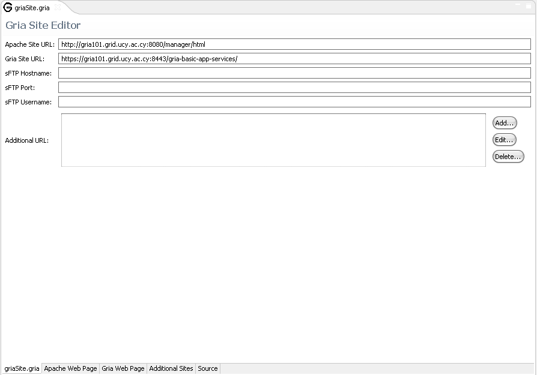

The Gria Site Editor is there to help the administrators of a GRIA site to have an easy access to the web pages that usually access in order to configure their site. In order to set up a GRIA site go to File->new->Other and select g-Eclipse->Gria Site Configuration. The Gria Site Editor will then open.
The administrator can enter the URL of the the apache and the GRIA site where he/she will have easy access to by using the tabs Apache Web Page and Gria Web Page respectively. The user can also add additional URLs where he/she can access them by selecting the tab Additional Sites.